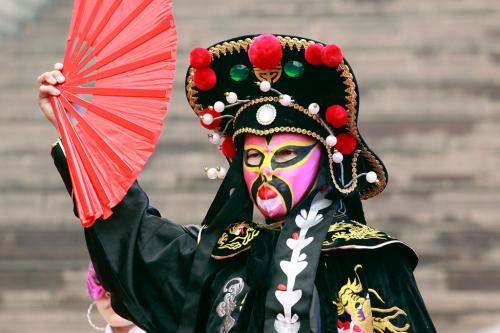
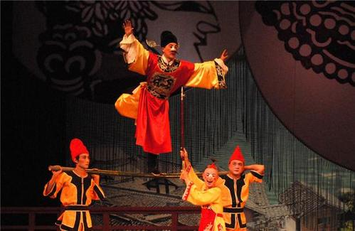

四川部分非物质文化遗产
-
成都漆艺
成都漆艺起源于距今三千多年的商周时期，是中国最早的漆艺之一。成都漆器又称“卤漆”，以精美华丽、光泽细润、图彩绚丽而著称。 -
银花丝
银花丝是成都最具特色的汉族传统金银工艺品，其以高纯度白银为原材料，造型别致，玲珑剔透，具有浓郁的汉民族特色和独特的地方风格。 -

川剧
川剧俗称川戏，主要流行于中国西南地区川渝云贵四省市的汉族地区，是融汇高腔、昆曲、胡琴(即皮黄)、弹戏(即梆子)和四川民间灯戏五种声腔艺术而成的传统剧种。 -

灯戏
灯戏不仅是重庆和四川地区极富地方特色的传统民间小戏，而且是川剧的重要声腔之一。灯戏源于四川川东北，由于其演出多与春节、灯节、社火、庆坛等民俗活动结合在一起，所以形成小戏多、喜戏多、闹戏多的特点，一般场面大、情节复杂、人物众多的戏基本不演。 -
木偶戏
木偶戏是用木偶来表演故事的戏剧。中国传统艺术之一，在中国古代又称傀儡戏。 中国木偶戏历史悠久，普遍的观点是："源于汉，兴于唐"。三国时已有偶人可进行杂技表演，隋代则开始用偶人表演故事。 -
羌笛
笛两管数孔（以前五孔，现在多为六孔，）用当地高山上生长的油竹制成，竹节长、管身较细，双管并排用线缠绕连结在一起。终身全长13 ～19 厘米，管口直径2 厘米左右，笛管上端装有4 厘米长的竹制吹嘴。 -
蜀锦织造技巧
蜀锦，专指蜀地（四川成都地区）生产的丝织提花织锦。其起源于春秋战国，兴盛于汉唐，距今已有两千多年历史。“锦城”、“锦江”、“锦里”、“锦官城”……一个“锦”字，道出成都与蜀锦无法割舍的缘分。 -
蜀绣
蜀绣又名“川绣”，主要指以四川成都为中心的川西平原一带的刺绣。蜀绣早在晋代就被称为“蜀中之宝”，而闻名于世。一千多年来，蜀绣逐步形成针法严谨、片线光亮、针脚平齐、色彩明快等特点。蜀绣的针法有十二大类，一百二十二种。 -
四川竹琴
四川竹琴是一种古老的传统戏曲剧种。表演者手持渔鼓、简板说唱故事。原名“名琴”。因其伴奏的乐器是竹制的渔鼓筒，故又称“渔鼓道琴”、“道筒”。清末、民初即有现名。 -
竹麻号子
竹麻号子是一种流传于四川省成都市的地方民歌，属于当地造纸工人在打竹麻时所唱的一种劳动号子，主要流行于成都所辖邛崃平乐地区。